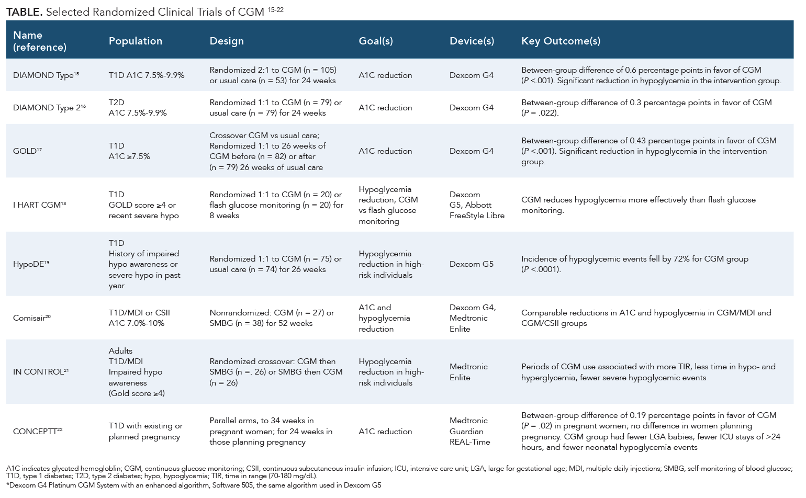

Advanced Topics
Other Sites
Sites that are useful for general background
Abbott Freestyle Libre Users (Facebook): https://www.facebook.com/groups/748445301888935/
- Active (20K members) and includes people from Abbott
Diabettech site: https://www.diabettech.com/freestylelibre/
QS Guide: Testing Food with Blood Glucose: another nice overview: https://quantifiedself.com/blog/qs-guide-testing-food-with-blood-glucose/
Quantified Self Conference 2018 had a breakout session: see their notes here: https://forum.quantifiedself.com/t/qs18-links-and-resources/5885/4 which are based on a lengthy May 2017 thread by Gary Wolf in the same forum.
Freestyle Libre Tips and Hacks: Youtube videos by Nerdabetic
Reddit: /r/Diabetes
- Especially check the thread on “Things you wished you knew about the Freestyle sensors”
Hardware
Freestyle Libre hardware information
- Freestyle Libre sensor teardown: Blogger Ido Roseman takes one apart, with photos.
- Reddit forum says: “it would appear that Libre sensors use NfcV, while S8 does not support NfcV (ISO 15693) but happily talks over NfcA and NfcB (ISO/IEC 14443). “
- Insulin calculator: settings/professional and password = CAA1C
Freestyle-compatible
Hardware devices that work with the Freestyle Libre. Using an NFC reader that talks directly to the Libre sensor, they send information to a bluetooth phone.
- MiaoMiao Shanghai company $200
- Ambrosia Systems Nightrider: $110 NFC-to-bluetooth device
- Bubblan: Supports All Libre Sensors except US Libre2 version : 139.99€
Other hardware
- Bionous: Seattle-Bellevue company that claims to have a low-cost non-invasive glucose reader (PHWare)
- Jobst Technologies Biosensors: hardware company that sells biosensors that detect glucose.
- http://tula-health.com/content/tech.html is raising money for a non-invasive CGM.
- OnDuo: An open resource doc about Google-Verily and Sanofi’s diabetes program that features CGM.
- Medtronic Guardian: open resource doc about another sensor+phone integrated CGM with prediction capabilities
Scientific articles
- Journal of Diabetes Science and Technology (2020) concludes that Freestyle Libre 2 performs within 20% of blood values.
- Lancet article (2016) that established the accuracy of the underlying CGM technology
- Glucotypes (2018): Stanford study claims people respond differently to foods
- See news article summary
- Upload your data to their online app here: https://abreschi.shinyapps.io/shinySpecClust/
- Personalized Nutrition by Prediction of Glycemic Responses (Cell: Zeevi et al 2015)
- Highly-cited study showing differences are driven by the microbiome
- “Continuous Gluose Profiles in Healthy Subjects” (2007) study.
- FDA approval document: more details about Freestyle Libre and its authorized uses
- (see similar approval for Dexcom, a de novo iCGM)
- “Hunting the Deceitful Turkey” 100+ page book about the tech behind non-invasive glucose monitoring
A handy table of CGM clinical trials (via AMJC)

Other Summary Resources
Other places to find more links and other information
Continuous Glucose Monitor page for the open source Loop project.